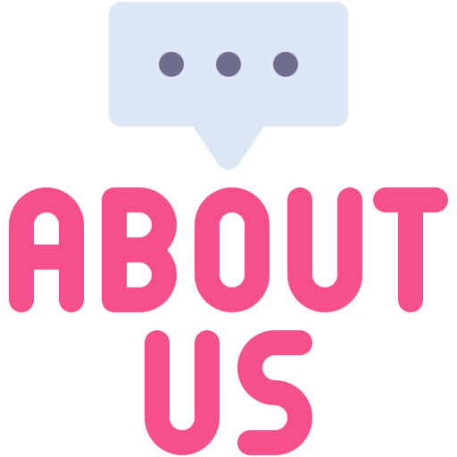
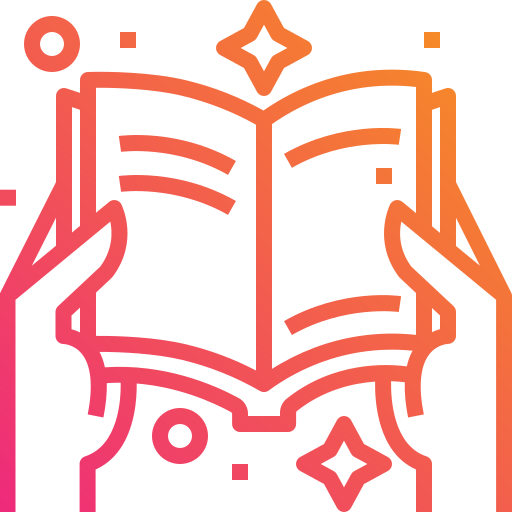
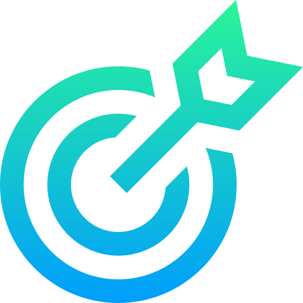
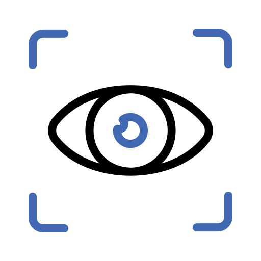
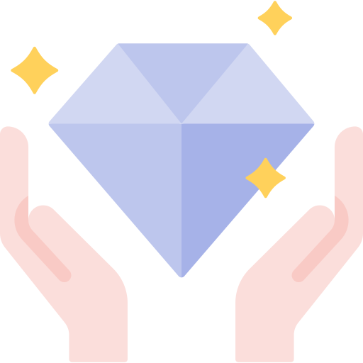

Conoce más sobre nosotros
Somos una agencia creativa especializada en manejo de redes sociales, creación de contenido y branding. Ayudamos a empresas a fortalecer su presencia digital mediante contenido visual profesional, creativo y alineado con la identidad de cada marca.


Historia
¿Cuándo se fundó?
LUAVY nació en agosto de 2024.
¿Quién la fundó?
Fue fundada por las hermanas Daniela Esquivel y Valeria Esquivel, quienes decidieron convertir su pasión por el diseño y la creatividad en un emprendimiento familiar.
Ver más
¿Cómo empezó?
Luavy comenzó como un emprendimiento familiar desde casa, aprovechando la experiencia que ya teníamos en diseño gráfico y manejo de redes sociales.
Aunque éramos muy jóvenes —Daniela con 19 años y Valeria con 22— siempre compartimos el deseo de emprender y construir un proyecto propio que nos permitiera crecer profesionalmente haciendo lo que más nos apasiona: crear.
Principales retos
Como ocurre con la mayoría de los emprendimientos, los primeros meses estuvieron llenos de desafíos. Uno de los mayores retos fue invertir en el
equipo necesario para ofrecer un servicio de calidad, al mismo tiempo que buscábamos clientes que confiaran en nuestro trabajo cuando aún no contábamos con un portafolio amplio que respaldara nuestra experiencia.
Poco a poco entendimos que no era necesario tener absolutamente todo para comenzar; lo verdaderamente importante era dar el primer paso, trabajar
con excelencia y permitir que cada proyecto hablara por nosotros.
Con el tiempo, nuestros propios clientes comenzaron a recomendarnos, y esa confianza se convirtió en la mejor herramienta para seguir creciendo.
¿Cómo ha evolucionado?
Desde el primer mes conseguimos nuestros primeros clientes, varios de los cuales continúan trabajando con nosotros hasta el día de hoy.
En temporadas de mayor demanda contamos con colaboradores que nos apoyan en áreas como community management y edición de video, permitiéndonos mantener la calidad de cada proyecto.
¿Cómo surgió la idea?
Todo comenzó cuando Daniela empezó a recibir solicitudes como diseñadora gráfica independiente. Con el tiempo, identificamos una necesidad muy
clara en los negocios de nuestra comunidad: muchas empresas ya estaban bien posicionadas y ofrecían excelentes productos o servicios, pero no contaban con el tiempo ni con el conocimiento necesario para mantener una presencia profesional en redes sociales.
Fue entonces cuando decidimos crear un servicio que se encargara absolutamente de todo el proceso: desde la planificación de ideas, la grabación
de contenido, la edición de videos y diseños, hasta la programación y publicación en redes sociales. Así nació Luavy.
¿Qué necesidad buscábamos satisfacer?
Queríamos ayudar a los empresarios a recuperar su tiempo, haciéndonos cargo de todo el proceso creativo: estrategia, planificación, grabación,
diseño, edición, programación y publicación del contenido.
Al mismo tiempo, buscábamos construir un trabajo que disfrutáramos, con la flexibilidad de trabajar desde casa y desarrollar un proyecto propio.
¿Qué problema resolvemos?
Ayudamos a que los negocios proyecten en redes sociales la misma calidad y profesionalismo que ofrecen en sus establecimientos físicos,
además de liberar a los emprendedores de la carga que implica administrar constantemente sus redes sociales.

Misión
Impulsar el crecimiento de negocios y emprendimientos mediante estrategias de contenido creativo, diseño gráfico y manejo profesional de redes sociales, ofreciendo un servicio integral que permita a nuestros clientes ahorrar tiempo, fortalecer su imagen de marca y conectar de forma auténtica con su audiencia.

Visión
Ser una agencia creativa reconocida por la calidad de nuestro trabajo, la cercanía con nuestros clientes y la capacidad de transformar la presencia digital de cada marca mediante estrategias innovadoras, humanas y con propósito.

Valores
Compromiso: Trabajamos cada proyecto como si fuera nuestro.
Creatividad: Buscamos ideas que hagan destacar a cada marca.
Cercanía: Construimos relaciones de confianza con nuestros clientes.
Calidad: Cuidamos cada detalle de nuestro trabajo.
Innovación: Nos mantenemos en constante aprendizaje.
Autenticidad: Creamos contenido real que conecte con las personas.